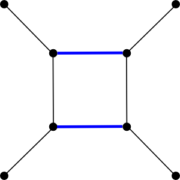
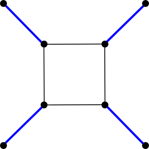

Maximum Cardinality Matching
Finds a maximum cardinality matching in an undirected graph using Edmonds' algorithm.
Complexity: O(mn alpha(m,n))
Defined in: <boost/graph/max_cardinality_matching.hpp>
Example
#include <iostream>
#include <vector>
#include <boost/graph/adjacency_list.hpp>
#include <boost/graph/max_cardinality_matching.hpp>
int main() {
using Graph = boost::adjacency_list<boost::vecS, boost::vecS, boost::undirectedS>;
using Vertex = boost::graph_traits<Graph>::vertex_descriptor;
Graph g(6);
boost::add_edge(0, 1, g); boost::add_edge(0, 3, g);
boost::add_edge(1, 2, g); boost::add_edge(2, 3, g);
boost::add_edge(4, 5, g);
std::vector<Vertex> mate(num_vertices(g));
auto mate_map = boost::make_iterator_property_map(
mate.begin(), get(boost::vertex_index, g));
boost::edmonds_maximum_cardinality_matching(g, mate_map);
std::cout << "Maximum matching (" << boost::matching_size(g, mate_map,
get(boost::vertex_index, g)) << " edges):\n";
for (Vertex v = 0; v < num_vertices(g); ++v) {
if (mate[v] != boost::graph_traits<Graph>::null_vertex() && v < mate[v])
std::cout << " " << v << " - " << mate[v] << "\n";
}
}Maximum matching (3 edges):
0 - 3
1 - 2edmonds_maximum_cardinality_matching
template <typename Graph, typename MateMap>
void edmonds_maximum_cardinality_matching(
const Graph& g,
MateMap mate);
template <typename Graph, typename MateMap,
typename VertexIndexMap>
void edmonds_maximum_cardinality_matching(
const Graph& g,
MateMap mate,
VertexIndexMap vm);| Direction | Parameter | Description |
|---|---|---|
IN |
|
An undirected graph. The graph type must be a model of Vertex and Edge List Graph and Incidence Graph. |
OUT |
|
Must be a model of
ReadWritePropertyMap,
mapping vertices to vertices. For any vertex v in the graph,
|
IN |
|
Must be a model of
ReadablePropertyMap,
mapping vertices to integer indices. If not provided, the algorithm
assumes the map is available as an internal graph property accessible
by calling |
checked_edmonds_maximum_cardinality_matching
template <typename Graph, typename MateMap>
bool checked_edmonds_maximum_cardinality_matching(
const Graph& g,
MateMap mate);
template <typename Graph, typename MateMap,
typename VertexIndexMap>
bool checked_edmonds_maximum_cardinality_matching(
const Graph& g,
MateMap mate,
VertexIndexMap vm);| Direction | Parameter | Description |
|---|---|---|
IN |
|
An undirected graph. The graph type must be a model of Vertex and Edge List Graph and Incidence Graph. |
OUT |
|
Must be a model of
ReadWritePropertyMap,
mapping vertices to vertices. For any vertex v in the graph,
|
IN |
|
Must be a model of
ReadablePropertyMap,
mapping vertices to integer indices. If not provided, the algorithm
assumes the map is available as an internal graph property accessible
by calling |
matching (generic)
template <typename Graph,
typename MateMap,
typename VertexIndexMap,
template <typename, typename, typename> class AugmentingPathFinder,
template <typename, typename> class InitialMatchingFinder,
template <typename, typename, typename> class MatchingVerifier>
bool matching(
const Graph& g,
MateMap mate,
VertexIndexMap vm);| Direction | Parameter | Description |
|---|---|---|
IN |
|
An undirected graph. The graph type must be a model of Vertex and Edge List Graph and Incidence Graph. |
OUT |
|
Must be a model of
ReadWritePropertyMap,
mapping vertices to vertices. For any vertex v in the graph,
|
IN |
|
Must be a model of ReadablePropertyMap, mapping vertices to integer indices. |
Description
A matching is a subset of the edges of a graph such that no two edges share a common vertex. Two different matchings in the same graph are illustrated below (edges in the matching are colored blue). The matching on the left is a maximal matching, meaning that its size can’t be increased by adding edges. The matching on the right is a maximum cardinality matching, meaning that it has maximum size over all matchings in the graph.
 |
 |
Both edmonds_maximum_cardinality_matching and checked_edmonds_maximum_cardinality_matching find the maximum cardinality matching in any undirected graph. The matching is returned in a MateMap, which is a ReadWritePropertyMap that maps vertices to vertices. In the mapping returned, each vertex is either mapped to the vertex it’s matched to, or to graph_traits<Graph>::null_vertex() if it doesn’t participate in the matching. If no VertexIndexMap is provided, both functions assume that the VertexIndexMap is provided as an internal graph property accessible by calling get(vertex_index,g). The only difference between edmonds_maximum_cardinality_matching and checked_edmonds_maximum_cardinality_matching is that as a final step, the latter algorithm runs a simple verification on the matching computed and returns true if and only if the matching is indeed a maximum cardinality matching.
Given a matching M, any vertex that isn’t covered by an edge in M is called free. Any simple path containing exactly 2n + 1 edges that starts and ends at free vertices and contains n edges from M is called an alternating path. Given an alternating path p, all matching and non-matching edges on p can be swapped, resulting in a new matching that’s larger than the original matching by exactly one edge. This method of incrementally increasing the size of matching, along with the following fact, forms the basis of Edmonds' matching algorithm:
An alternating path through the matching M exists if and only if M is not a maximum cardinality matching.
The difficult part is, of course, finding an augmenting path whenever one exists. The algorithm we use for finding a maximum cardinality matching consists of three basic steps:
-
Create an initial matching.
-
Repeatedly find an augmenting path and use it to increase the size of the matching until no augmenting path exists.
-
Verify that the matching found is a maximum cardinality matching.
If you use checked_edmonds_maximum_cardinality_matching or edmonds_maximum_cardinality_matching, all three of these steps are chosen for you, but it’s easy to plug in different algorithms for these three steps using the generic matching function discussed below — in fact, both checked_edmonds_maximum_cardinality_matching and edmonds_maximum_cardinality_matching are just inlined specializations of this function.
When quoting time bounds for algorithms, we assume that VertexIndexMap is a property map that allows for constant-time mapping between vertices and indices (which is easily achieved if, for instance, the vertices are stored in contiguous memory). We use n and m to represent the size of the vertex and edge sets, respectively, of the input graph.
Algorithms for Creating an Initial Matching
-
empty_matching: Takes time O(n) to initialize the empty matching. -
greedy_matching: The matching obtained by iterating through the edges and adding an edge if it doesn’t conflict with the edges already in the matching. This matching is maximal, and is therefore guaranteed to contain at least half of the edges that a maximum matching has. Takes time O(m log n). -
extra_greedy_matching: Sorts the edges in increasing order of the degree of the vertices contained in each edge, then constructs a greedy matching from those edges. Also a maximal matching, and can sometimes be much closer to the maximum cardinality matching than a simplegreedy_matching. Takes time O(m log n), but the constants involved make this a slower algorithm thangreedy_matching.
Algorithms for Finding an Augmenting Path
-
edmonds_augmenting_path_finder: Finds an augmenting path in time O(m alpha(m,n)), where alpha(m,n) is an inverse of the Ackerman function. alpha(m,n) is one of the slowest growing functions that occurs naturally in computer science; essentially, alpha(m,n) ⇐ 4 for any graph that we’d ever hope to run this algorithm on. Since we arrive at a maximum cardinality matching after augmenting O(n) matchings, the entire algorithm takes time O(mn alpha(m,n)). Edmonds' original algorithm appeared in [64], but our implementation of Edmonds' algorithm closely follows Tarjan’s description of the algorithm from [27]. -
no_augmenting_path_finder: Can be used if no augmentation of the initial matching is desired.
Verification Algorithms
-
maximum_cardinality_matching_verifier: Returns true if and only if the matching found is a maximum cardinality matching. Takes time O(m alpha(m,n)), which is on the order of a single iteration of Edmonds' algorithm. -
no_matching_verifier: Always returns true.
Why is a verification algorithm needed? Edmonds' algorithm is fairly complex, and it’s nearly impossible for a human without a few days of spare time to figure out if the matching produced by edmonds_matching on a graph with, say, 100 vertices and 500 edges is indeed a maximum cardinality matching. A verification algorithm can do this mechanically, and it’s much easier to verify by inspection that the verification algorithm has been implemented correctly than it is to verify by inspection that Edmonds' algorithm has been implemented correctly. The Boost Graph library makes it incredibly simple to perform the subroutines needed by the verifier (such as finding all the connected components of odd cardinality in a graph, or creating the induced graph on all vertices with a certain label) in just a few lines of code.
Understanding how the verifier works requires a few graph-theoretic facts. Let m(G) be the size of a maximum cardinality matching in the graph G. Denote by o(G) the number of connected components in G of odd cardinality, and for a set of vertices X, denote by G - X the induced graph on the vertex set V(G) - X. Then the Tutte-Berge Formula says that
2 * m(G) = min ( |V(G)| + |X| - o(G-X) )
Where the minimum is taken over all subsets X of the vertex set V(G). A side effect of the Edmonds Blossom-Shrinking algorithm is that it computes what is known as the Edmonds-Gallai decomposition of a graph: it decomposes the graph into three disjoint sets of vertices, one of which achieves the minimum in the Tutte-Berge Formula.
An outline of our verification procedure is: Given a Graph g and MateMap mate,
-
Check to make sure that
mateis a valid matching ong. -
Run
edmonds_augmenting_path_finderonce ongandmate. If it finds an augmenting path, the matching isn’t a maximum cardinality matching. Otherwise, we retrieve a copy of thevertex_statemap used by theedmonds_augmenting_path_finder. The Edmonds-Gallai decomposition tells us that the set of vertices labeledV_ODDby thevertex_statemap can be used as the set X to achieve the minimum in the Tutte-Berge Formula. -
Count the number of vertices labeled
V_ODD, store this innum_odd_vertices. -
Create a
filtered_graphconsisting of all vertices that aren’t labeledV_ODD. Count the number of odd connected components in this graph and store the result innum_odd_connected_components. -
Test to see if equality holds in the Tutte-Berge formula using |X| =
num_odd_verticesand o(G-X) =num_odd_connected_components. Return true if it holds, false otherwise.
Assuming these steps are implemented correctly, the verifier will never return a false positive, and will only return a false negative if edmonds_augmenting_path_finder doesn’t compute the vertex_state map correctly, in which case the edmonds_augmenting_path_finder isn’t working correctly.
Creating Your Own Matching Algorithms
Creating a matching algorithm is as simple as plugging the algorithms described above into the generic matching function.
The matching functions provided for you are just inlined specializations of this function: edmonds_maximum_cardinality_matching uses edmonds_augmenting_path_finder as the AugmentingPathFinder, extra_greedy_matching as the InitialMatchingFinder, and no_matching_verifier as the MatchingVerifier. checked_edmonds_maximum_cardinality_matching uses the same parameters except that maximum_cardinality_matching_verifier is used for the MatchingVerifier.
These aren’t necessarily the best choices for any situation — for example, it’s been claimed in the literature that for sparse graphs, Edmonds' algorithm converges to the maximum cardinality matching more quickly if it isn’t supplied with an initial matching. Such an algorithm can be easily assembled by calling matching with
-
AugmentingPathFinder = edmonds_augmenting_path_finder -
InitialMatchingFinder = empty_matching
and choosing the MatchingVerifier depending on how careful you’re feeling.
Suppose instead that you want a relatively large matching quickly, but are not exactly interested in a maximum matching. Both extra_greedy_matching and greedy_matching find maximal matchings, which means they’re guaranteed to be at least half the size of a maximum cardinality matching, so you could call matching with
-
AugmentingPathFinder = no_augmenting_path_finder -
InitialMatchingFinder = extra_greedy_matching -
MatchingVerifier = maximum_cardinality_matching_verifier
The resulting algorithm will find an extra greedy matching in time O(m log n) without looking for augmenting paths. As a bonus, the return value of this function is true if and only if the extra greedy matching happens to be a maximum cardinality matching.
Returns
edmonds_maximum_cardinality_matching returns void. The matching is stored in the MateMap output parameter.
checked_edmonds_maximum_cardinality_matching returns true if and only if the matching computed is a maximum cardinality matching.
The generic matching function returns true if and only if the MatchingVerifier confirms the matching.